Data Engineering & Orchestration
ETL pipelines, workflow orchestration, and scalable processing systems.
- Python, PySpark, SQL, Java, Unix/Linux
- Airflow, Cloud Composer, Autosys
- Partitioning, clustering, caching
Data Analyst/Engineer and Data Scientist with 5+ years of experience building scalable data systems across Hadoop, Azure, and Google Cloud. Specialized in designing high-performance ETL pipelines and distributed data processing solutions using Python, PySpark, SQL, and Spark.
Experienced in building batch and real-time pipelines using Kafka, Pub/Sub, and Event Hubs, along with implementing data quality frameworks using Great Expectations and dbt.
Hands-on in AI/ML integration including predictive modeling and credit risk analytics using XGBoost, TensorFlow, and PyTorch, along with production-grade data pipelines.
ETL pipelines, workflow orchestration, and scalable processing systems.
Multi-cloud and Hadoop ecosystem for large-scale analytics workloads.
Validation, governance, and reporting for trusted analytics delivery.
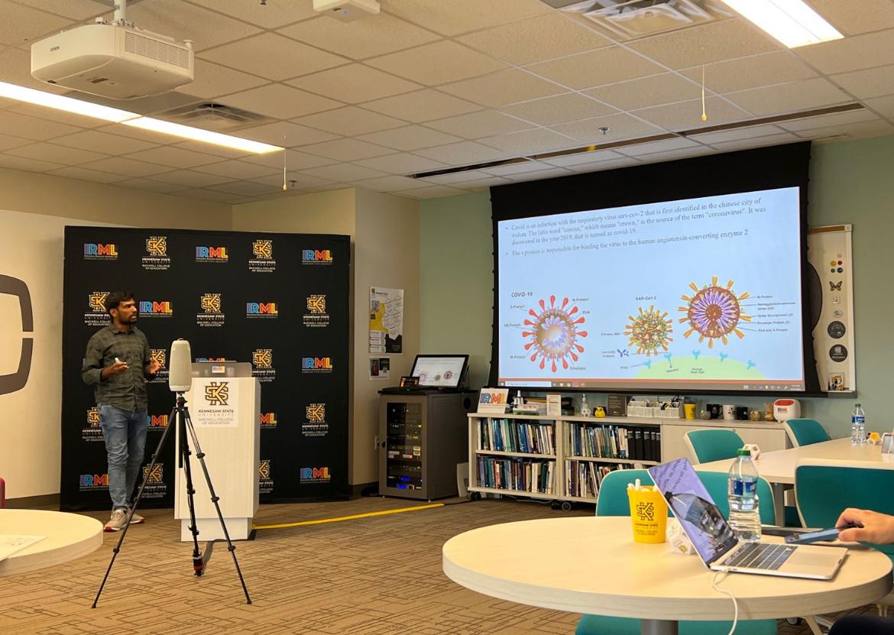
Presented a global research submission on COVID-19 variant analysis and data science applications, showcasing how data engineering and machine learning can be applied to understand virus mutation patterns and global spread behavior.
Demonstrated the use of SQL for genomic data processing, Power BI for interactive visualization dashboards, and Machine Learning models for variant classification and transmission prediction.
The presentation highlighted real-world integration of data pipelines, analytics, and AI-driven insights to support public health decision-making and pandemic monitoring strategies.
GitHub LinkDeveloped a real-time face mask detection application using deep learning and computer vision techniques. Implemented face detection using OpenCV’s Haar Cascade classifier and integrated a Keras-based CNN model to classify faces as Mask or No Mask with low latency. Built an end-to-end image processing pipeline including grayscale conversion, resizing, and normalization to ensure consistent model input. Enabled real-time video stream processing with bounding boxes and color-coded labels for intuitive visualization. Optimized performance for continuous frame processing, demonstrating practical experience in deploying machine learning models in real-time environments.
GitHub Link: Facemask DetectDesigned and developed a full-stack e-commerce web application using .NET MVC and SQL Server. Implemented core functionalities including product catalog management, shopping cart operations, and relational database modeling for efficient data storage and retrieval. Focused on backend logic, data integrity, and scalable architecture to support dynamic user interactions.
GitHub Link:E-commerce WebsiteDeveloped a Java-based bus ticketing system applying object-oriented programming principles. Implemented booking logic, travel scheduling, and fare calculation based on age categories and user inputs. Emphasized modular design, code reusability, and clean architecture to simulate real-world ticketing workflows.
GitHub Link: Java based Bus Ticketing SystemEngineered large-scale Hadoop (Hive/Spark) pipelines processing 1+ TB of financial data monthly, ensuring high availability and distributed scalability. Optimized Spark SQL joins, aggregations, and shuffle operations, improving batch performance by 45% using partitioning and execution tuning. Integrated Kafka-based streaming pipelines with Hive and Snowflake for near real-time analytics. Migrated legacy Hadoop workloads to Snowflake, reducing operational overhead and improving query performance. Built modular ELT pipelines using dbt with staging, intermediate, and mart layers. Implemented data quality frameworks using Great Expectations and dbt tests, ensuring accuracy and reliability.
Designed and maintained scalable ETL pipelines across Azure, GCP, and Snowflake, processing 1.5+ TB of manufacturing and sales data. Developed PySpark transformations in Databricks and Dataproc for data cleansing, enrichment, and standardization. Improved query performance by 30% using partitioning, clustering, and predicate pushdown. Reduced compute costs by 25% through Spark optimization and autoscaling strategies. Built real-time streaming pipelines using Event Hubs, Pub/Sub, and Dataflow. Orchestrated workflows using ADF, Airflow, and Cloud Composer for reliable data processing.
Conducted research on DNA repair and COVID-19 data analysis using SQL Server and Power BI. Performed data curation, transformation, and visualization to support academic research. Designed and maintained research databases ensuring accuracy and reproducibility. Assisted researchers with data extraction, dashboard creation, and reporting.
Built hybrid multi-cloud data pipelines across Azure, GCP, and Snowflake for enterprise workloads. Engineered PySpark-based transformation frameworks and implemented CDC and incremental pipelines, reducing data refresh time by 70%. Integrated legacy DB2 systems into cloud platforms, improving scalability. Developed real-time streaming pipelines using Pub/Sub and Dataflow. Automated data validation and reconciliation frameworks using Python, SQL, and Great Expectations.
Exploring DNA Damage and Repair Mechanisms: A Review with Computational Insights
DOI: 10.3390/biotech13010003Design and Analysis of MEMS-Based Electro-Spray Thruster for Micro and Nano Satellites
DOI: 10.1007/s00542-020-04751-7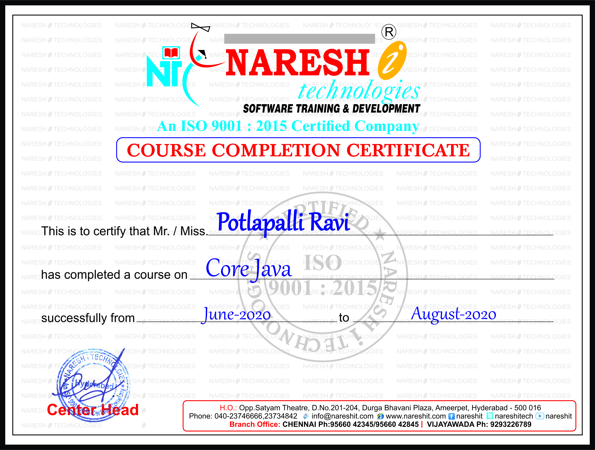


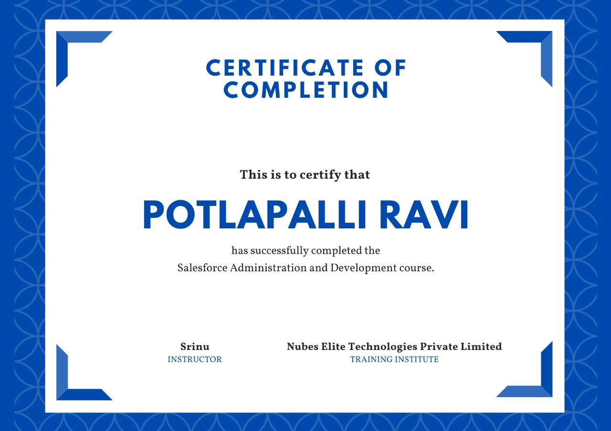


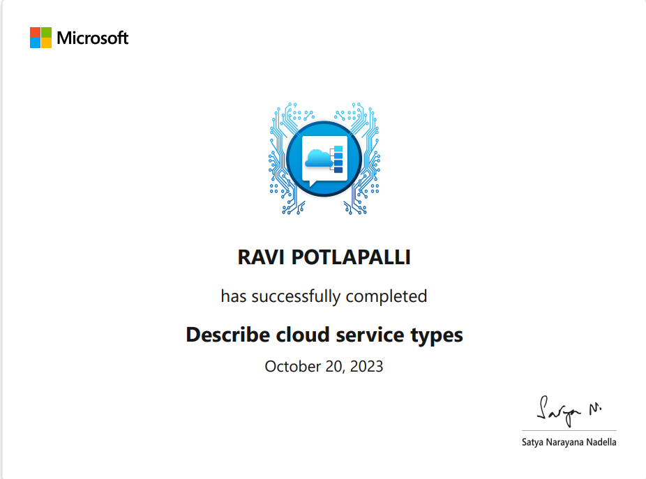
IaaS, PaaS, SaaS fundamentals
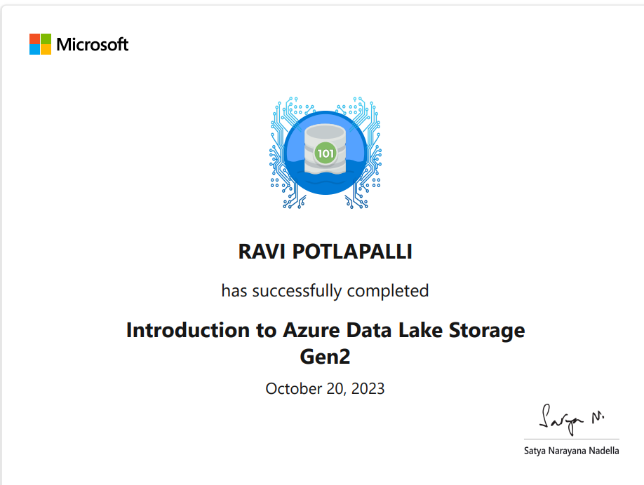
Scalable data lake for analytics
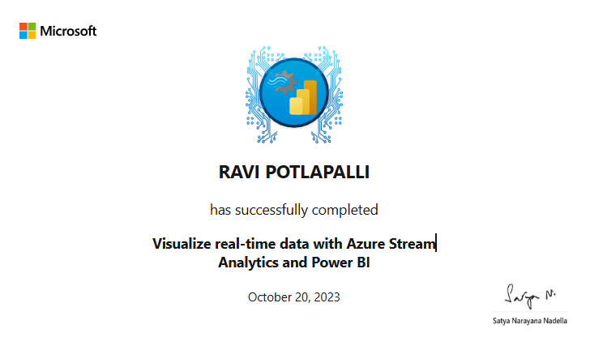
Streaming dashboards & visualization
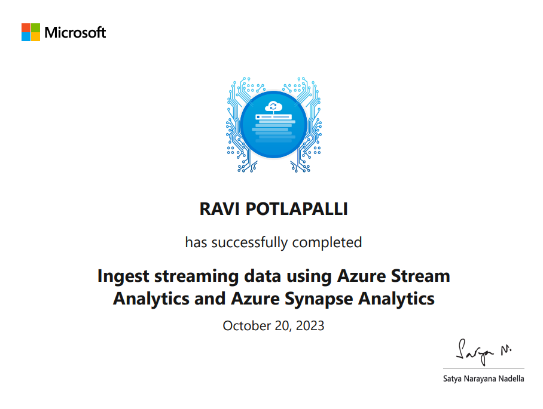
Azure Stream Analytics pipelines
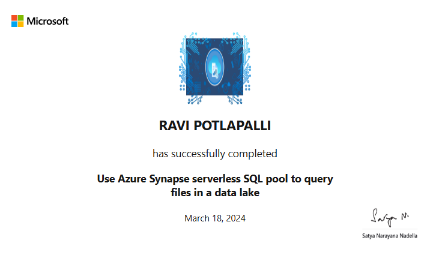
Query data lake files using SQL
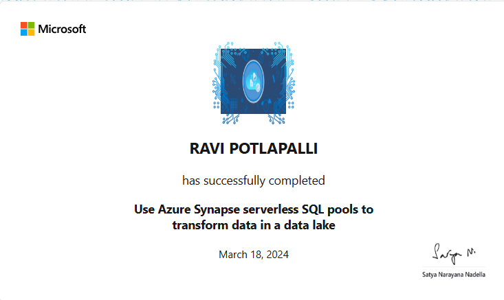
Transform data using serverless SQL
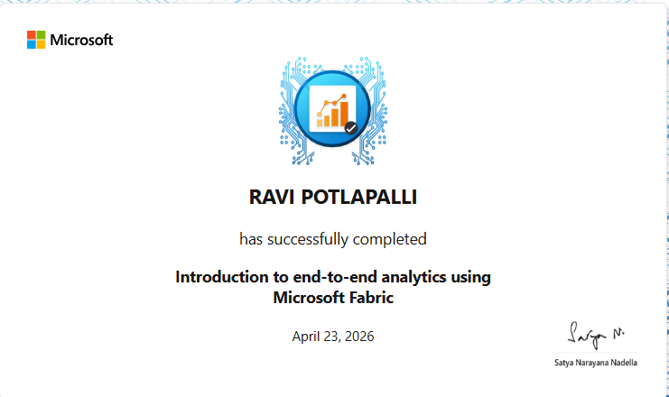
Unified analytics platform
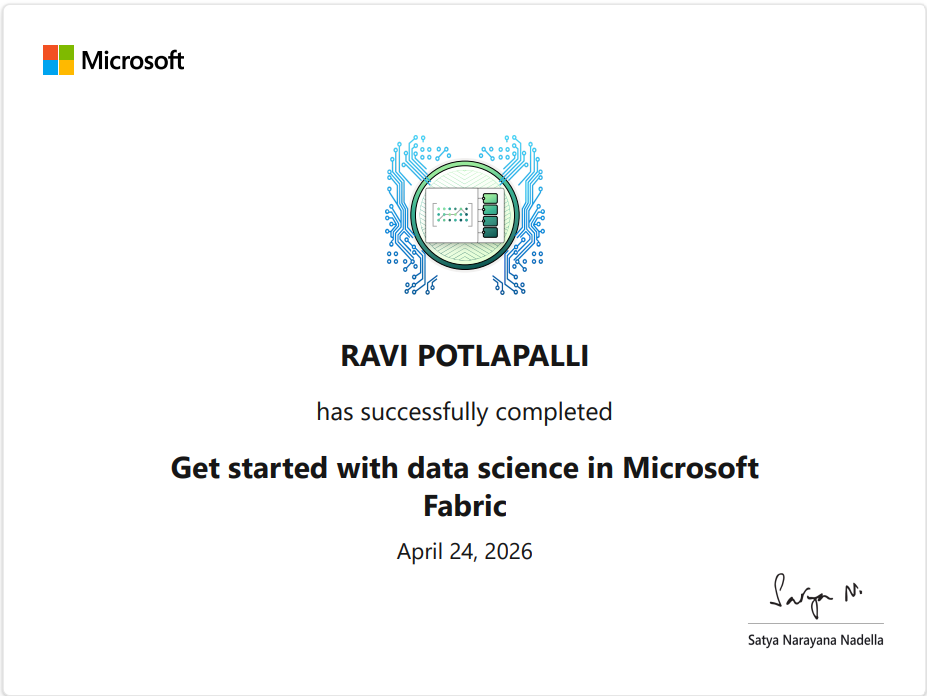
ML & analytics workflows
Primary contact email
potlapalliravi2021@gmail.comDirect contact number
+1 (678)-858-7696Professional profile
View Profile